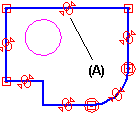
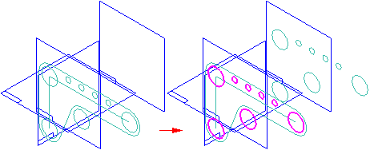

Using sketches in assemblies
Using an assembly sketch to construct parts and subassemblies
Assembly sketch geometry can be associatively linked to drive the creation of ordered part geometry only.
When you create or modify a part or subassembly in the context of the assembly, you can use your assembly sketches to construct part profiles and subassembly sketches. You can also use the sketch elements to construct assembly features. For example, you can use the Project to Sketch command to include an element from an assembly sketch to a part profile or to include an edge from a part to the assembly sketch.
To associatively include an assembly sketch element, you must first set the following options:
-
In the Solid Edge Options dialog box, on the Inter-Part tab, select Allow Inter-Part Links Using: Project to Sketch Command In Part and Assembly Sketches.
-
In the Project to Sketch Options dialog box, select the options:
-
Allow locate of peer assembly parts and assembly sketches
-
Maintain associativity when including geometry from other parts in the assembly
Note:For more information about working with associative links between parts and assemblies in Solid Edge, see the Inter-Part associativity topic.
-
Link relationship handle
A special relationship handle is added to any linked sketch element (A) to indicate that it is linked to an element in another document. You can break a link by deleting the relationship handle for that link.

Positioning 3D components using assembly sketches
You can position parts and subassemblies with respect to a part or assembly sketch. You can position 3D components using assembly relationships, such as mate and planar align; or using 2D dimensions and relationships, such as distance between and connect, or using the Select command.
In an assembly layout sketch, you can reference and position components defined as
blocks using the Duplicate Component command  . Using the Select From and Select To steps in the command, you can select a block in an assembly or subassembly sketch,
which is then matched to the orientation of the components.
. Using the Select From and Select To steps in the command, you can select a block in an assembly or subassembly sketch,
which is then matched to the orientation of the components.

While editing an assembly sketch, you can use the Parts Library tab to add new components to the assembly.
Positioning assembly sketches using 3D components
You can also constrain elements on an assembly sketch to a 3D assembly component such that if the size, shape or position of the 3D component changes, the assembly sketch updates. When you are editing an assembly sketch, you can select a 3D component and set the Component Driving option on the Position 3D Component command bar to specify that the 3D component drives the size, shape, and position of the assembly sketch.
Copying sketches
Your assembly layout might contain representations of many parts and subassemblies, and during the course of design you might choose to copy sketches between documents. You can use the Copy Sketch command to copy assembly and part sketches between documents when working in the context of an assembly. When copying sketches, you use the Copy Sketch To Target dialog box to specify the target document, and whether the copied sketch is associatively linked to the original sketch.
Tearing-off sketches
You can use the Tear-Off Sketch command to move or copy elements in an assembly sketch to a new reference plane you define.

When you copy sketch elements, you can use the options on the Tear-Off Sketch Options dialog box to specify whether the copied elements are associative to the existing elements.
Assembly sketches and alternate assemblies
The Sketch and Copy Sketch commands are available only when the Apply Edits to All Members option on the Family of Assemblies tab is set (you are working globally).
For more information, see the Alternate Assemblies Impact on Solid Edge Functionality Help topic.
How do I
Project part edges onto a sketchChange peer edge locatability
Change silhouette edge locatability
Delete a sketch or sketch elements
Rename a sketch
Copy or move a sketch to another reference plane
Copy a sketch to another document
Learn more
Drawing synchronous sketches of partsUsing ordered sketches to create ordered features
Editing sketch elements